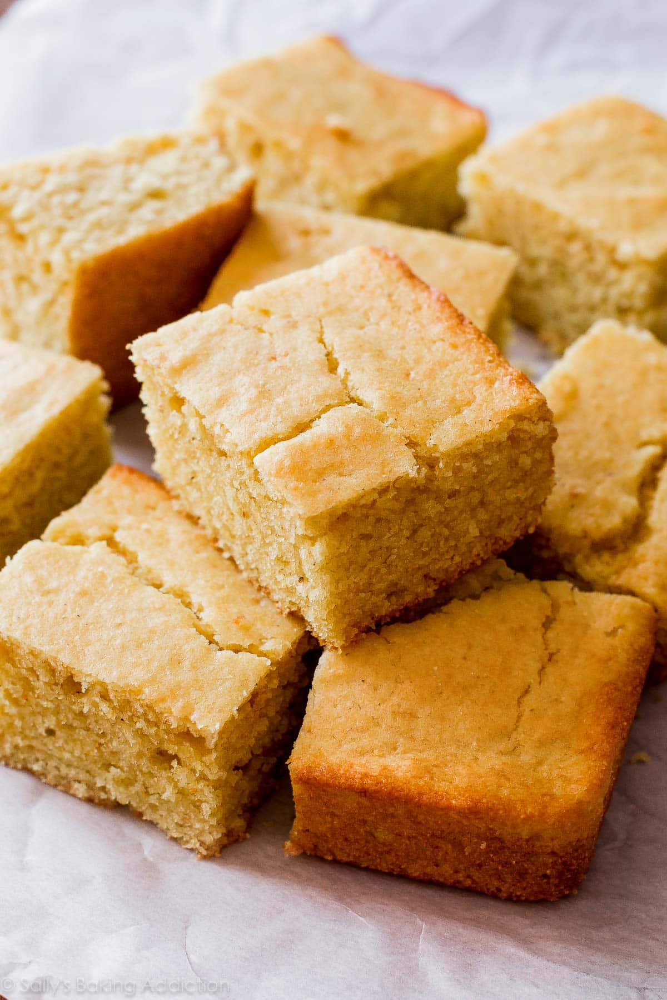

Cornbread Recipe

Description
One of my favorite cornbread recipes. This recipe was taken from America's Test Kitchen for making corn muffins. It works just as well for cornbread!
Ingredients
Dry Ingredients
- 1 1/2 Cup Cornmeal
- 1 Cup All-Purpose Flour
- 1 1/2 tsp Baking Powder
- 1 tsp Baking Soda
- 1 1/4 tsp Salt
Wet Ingredients
Part 1
- 1 1/2 Cup Milk
- 1/2 Cup Cornmeal
Part 2
- 1 Cup Sour Cream
- 1 Stick Melted Butter OR 1/2 Cup Applesauce
- 3 Tbs Sugar
- 2 Eggs
Instructions
- Pre-heat oven to 425 degrees F
- Mix Dry Ingredients.
- Mix Wet Ingredients Part 1, microwave for 90 seconds initially, and then continue to mix/microwave for 30 seconds until thickened.
- Mix Wet Ingredients Part 2.
- Cool Wet Ingredients Part 1 and mix with Part 2.
- Fold Dry Ingredients into Wet Ingredients carefully without beating the mixture.
- Bake for 15 minutes.